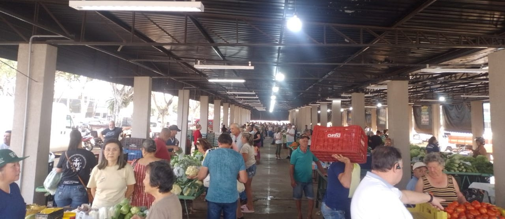
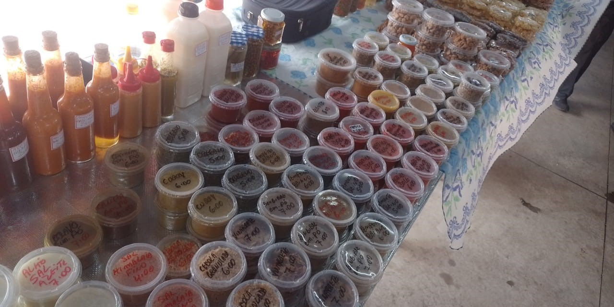
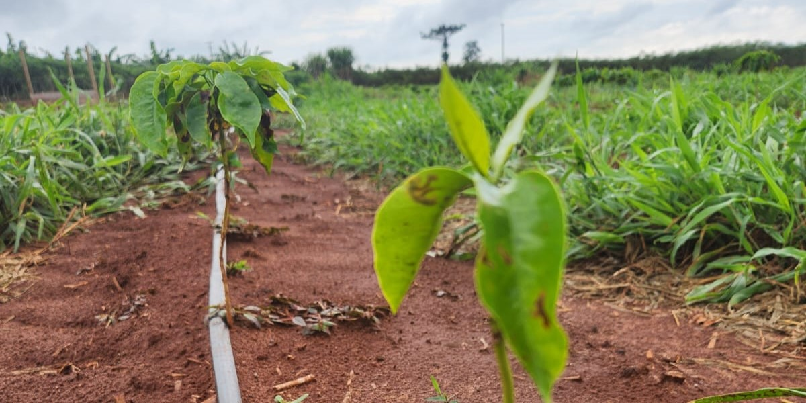

Cianorte: Celebrando a Agricultura Familiar
Uma cidade vibrante com uma rica tradição agrícola
Cianorte, com seus 84 mil habitantes, é mais do que uma cidade de médio porte no noroeste do Paraná. É um lar vibrante para a agricultura familiar, onde a terra fértil e o trabalho dedicado dos pequenos produtores garantem à mesa dos cidadãos produtos frescos, saborosos e nutritivos.

No coração da cidade, a feira do produtor se destaca como um verdadeiro oásis de cores, aromas
e sabores. Lá, você encontra uma variedade imensa de legumes, verduras, frutas, grãos e muito
mais, tudo colhido com carinho e cuidaslllaado pelas mãos dos nossos agricultores locais.
Feira do Produtor: Um oásis de cores, aromas e sabores

A agricultura familiar em Cianorte se traduz em uma rica produção de diversos produtos,
que representam a força e a diversidade da nossa terra:
Produtos que representam a força da nossa terra
- - Frango de corte: Líder absoluto, com 65% do rendimento total da cidade.
- - Cana-de-açúcar: 11% da produção, garantindo a doçura e a energia da região.
- - Soja: 5% da produção, um ingrediente versátil e essencial para a alimentação.
- - Mandioca: 5% da produção, base para diversos pratos típicos e apreciados.
- - Carne bovina: 4% da produção, fornecendo proteínas de alta qualidade.
- - E muito mais: 10% da produção, composto por uma variedade de produtos que enriquecem a mesa dos cianortenses.

Reconhecendo a importância do café para a região, a Prefeitura Municipal de Cianorte
oferece um plano de distribuição de mudas para pequenos produtores rurais. Através deste
programa, os agricultores recebem mudas de diversas variedades, suporte técnico e a
oportunidade de impulsionar sua produção.
Oportunidades para pequenos produtores: Projeto Mudas de Café
Junte-se a nós na valorização da agricultura familiar!